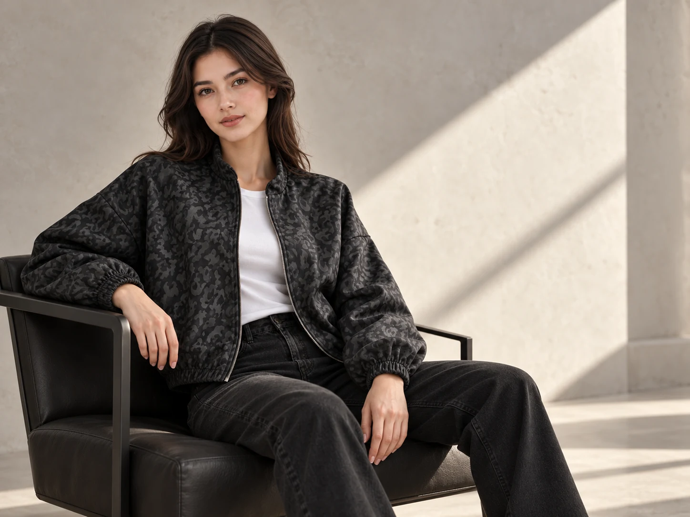

واتساپ فروشگاه
۰۹۱۰۲۴۵۳۷۱۳
گفتگو در واتساپTHE LORENCE JOURNAL01 / GUIDE
لباس دلخواهتان را ببینید، انتخابها را کنار هم بگذارید و جزئیات خرید آنلاین یا حضوری را با لورنس هماهنگ کنید.
دیدن لباسها
01 / HOW TO SHOP
چه آنلاین انتخاب کنید، چه حضوری به فروشگاه سر بزنید، موجودی و مبلغ نهایی با لورنس تأیید میشود.
در ارتباط با لورنسمحصول، رنگ و تعداد را به سبد انتخابها اضافه کنید. سایز دلخواه را بنویسید یا برای انتخاب آن راهنمایی بخواهید.
در سبد، «تکمیل درخواست خرید» را بزنید. نام و شماره تماس اختیاریاند؛ روش تحویل را انتخاب کنید و برای درخواست ارسال، شهر مقصد را بنویسید.
متن آماده را بررسی کنید. «ثبت سفارش آنلاین» آن را در واتساپ فروشگاه باز میکند؛ برای فرستادن پیام، خودتان دکمهٔ ارسال واتساپ را بزنید.
پس از پاسخ فروشگاه، موجودی، سایز، مبلغ نهایی، روش تحویل و پرداخت را هماهنگ کنید. انتخاب لباس در سایت، موجودی آن را رزرو نمیکند.
02 / LET US TALK
برای پرسیدن جزئیات لباسها، هماهنگی سفارش یا خرید حضوری با لورنس در ارتباط باشید.
۰۹۱۰۲۴۵۳۷۱۳
گفتگو در واتساپپیش از مراجعه، موجودی لباس موردنظرتان را با فروشگاه هماهنگ کنید.
برای دیدن پستها و ارتباط با صفحهٔ فروشگاه.
دیدن صفحهٔ لورنس03 / BEFORE YOU CHOOSE
پاسخ چند پرسش رایج دربارهٔ انتخاب لباس و هماهنگی سفارش.
در صفحهٔ محصول، سایز دلخواه را انتخاب یا وارد کنید. اگر مطمئن نیستید، راهنمایی بخواهید و پیش از نهاییکردن خرید، اندازههای دقیق همان لباس را از فروشگاه بپرسید.
محصول را به سبد انتخابها اضافه کنید و متن درخواست را برای فروشگاه بفرستید. قیمتهای نامشخص نیاز به استعلام دارند؛ مبلغ نهایی خرید و هزینهٔ تحویل در گفتگو تأیید میشود.
برای درخواست ارسال، نام شهر مقصد را در فرم بنویسید. امکان ارسال، هزینه و زمان تحویل را پیش از نهاییکردن خرید با فروشگاه هماهنگ کنید.
شرایط و امکان تعویض همان کالا را پیش از نهاییکردن خرید از فروشگاه بپرسید.
تصاویر سایت، پیشنمایش بازسازیشده بر اساس مرجع لباس هستند. برای بررسی رنگ، چاپ، جزئیات و تنخور واقعی، از فروشگاه عکس و راهنمایی بخواهید.
این دکمه متن انتخابها را در واتساپ باز میکند. پیام را خودتان ارسال میکنید و سپس جزئیات خرید و تأیید سفارش را با فروشگاه هماهنگ میکنید.
سبد انتخابها روی همین دستگاه نگهداری میشود. سایت اطلاعات فرم نام، شماره تماس و روش تحویل را ذخیره نمیکند. با بازکردن واتساپ، متن آماده به واتساپ منتقل میشود؛ ارسال پیام به فروشگاه با شماست.
BACK TO THE EDIT
انتخاب بعدی شما کدام است؟